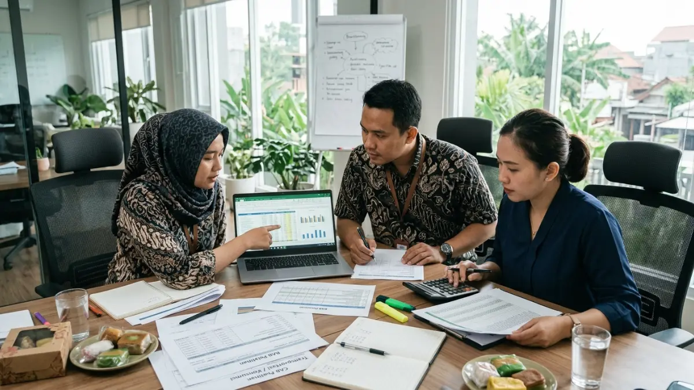
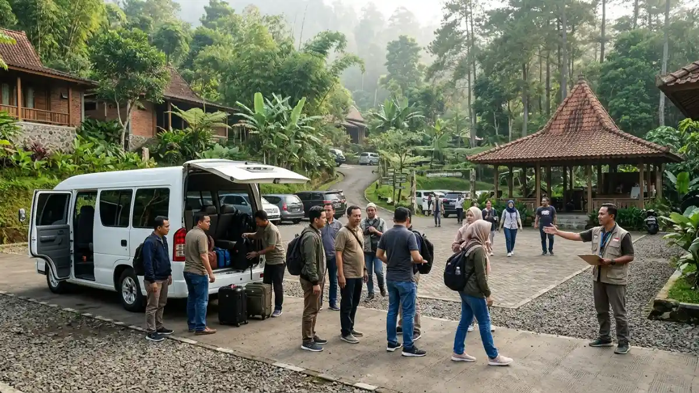

Tim HRD sedang menyusun dan merinci anggaran corporate training dengan membandingkan beberapa penawaran dari vendor pelatihan di Tumpang Malang.Biaya corporate training Tumpang Malang umumnya bergantung pada jumlah peserta, durasi, fasilitas, transportasi, konsumsi, dan fasilitator, sehingga setiap perusahaan perlu meminta penawaran tertulis yang terperinci.
- Biaya corporate training bervariasi menurut jumlah peserta, durasi, dan format program.
- Komponen utama meliputi fasilitator, lokasi, konsumsi, transportasi, perlengkapan, dan dokumentasi.
- Penawaran tertulis yang terperinci membantu menghindari biaya tersembunyi.
- Dana cadangan dan rencana cuaca perlu dimasukkan sejak awal.
- Evaluasi dampak membantu perusahaan menilai nilai guna anggaran yang dikeluarkan.
- Apa Saja Komponen Biaya Corporate Training?
- Faktor Apa yang Memengaruhi Biaya Corporate Training di Tumpang?
- Bagaimana Menyusun Anggaran Corporate Training dengan Tepat?
- Bagaimana Menghindari Biaya Tersembunyi dalam Corporate Training?
- Bagaimana Menghemat Biaya Tanpa Menurunkan Kualitas Pelatihan?
- Bagaimana Menilai Apakah Biaya Pelatihan Sepadan dengan Hasilnya?
- Kapan Waktu Terbaik Memesan Corporate Training di Tumpang?
- Kesimpulan
- FAQ
Apa Saja Komponen Biaya Corporate Training?
Elemen pengeluaran yang terkait dengan pelatihan korporat mencakup honorarium untuk para fasilitator, biaya sewa atau tiket akses ke lokasi penyelenggaraan, penyediaan konsumsi peserta, biaya transportasi untuk rombongan peserta, perlengkapan yang diperlukan untuk kegiatan, layanan dokumentasi acara, serta asuransi dan perlengkapan keselamatan kerja apabila dipandang perlu.
Honor fasilitator mencakup perancangan program dan pelaksanaan sesi. Biaya lokasi dapat berupa tiket masuk, sewa area, atau paket menginap.
Sebagai gambaran, Popbela pernah melaporkan tiket masuk Lembah Tumpang sebesar Rp60 ribu, tetapi tarif dapat berubah, sehingga angka terbaru harus dikonfirmasi langsung ke pengelola.
Konsumsi meliputi makan siang, kudapan, dan minuman. Transportasi mencakup bus atau elf bila rombongan berangkat bersama.
Perlengkapan kegiatan, dokumentasi foto atau video, serta perlengkapan keselamatan melengkapi daftar.
Setiap komponen perlu dituliskan terpisah agar perusahaan dapat membandingkan penawaran secara adil.
Faktor Apa yang Memengaruhi Biaya Corporate Training di Tumpang?
Faktor yang memengaruhi biaya corporate training di Tumpang meliputi jumlah peserta, lama kegiatan, jenis aktivitas, pilihan menginap, jarak transportasi dari Malang, dan musim kunjungan di kawasan wisata.
Jumlah peserta memengaruhi biaya konsumsi, perlengkapan, dan kebutuhan fasilitator. Durasi menentukan apakah acara cukup satu hari atau memerlukan menginap.
Jenis aktivitas juga berpengaruh, karena aktivitas dengan perlengkapan khusus umumnya membutuhkan anggaran lebih besar dibanding diskusi kelompok sederhana.
Faktor lokal turut berperan. Jarak dari Kota Malang ke Kecamatan Tumpang memengaruhi ongkos transportasi rombongan.
Musim liburan atau akhir pekan di kawasan wisata dapat memengaruhi ketersediaan dan tarif lokasi. Oleh karena itu, melakukan pemesanan dengan waktu yang cukup panjang sebelumnya serta menunjukkan fleksibilitas dalam pemilihan tanggal kerap kali memungkinkan perusahaan untuk memperoleh penawaran yang lebih menguntungkan dan sesuai dengan kebutuhan mereka.
Bagaimana Menyusun Anggaran Corporate Training dengan Tepat?
Penyusunan anggaran pelatihan korporat dilakukan melalui penetapan tujuan pembelajaran, perhitungan jumlah peserta yang akan mengikuti, perincian mendetail setiap komponen pengeluaran, permohonan penawaran dari berbagai penyedia layanan, serta penambahan dana cadangan untuk mengantisipasi kebutuhan yang tidak dapat diprediksi sebelumnya.
- Tetapkan tujuan dan jumlah peserta yang akan dilatih.
- Daftar semua komponen biaya, dari fasilitator hingga dokumentasi.
- Meminta penawaran tertulis dari sejumlah vendor dengan menggunakan format yang konsisten dan seragam.
- Tambahkan dana cadangan untuk kebutuhan mendadak, misalnya perubahan jumlah peserta.
- Tetapkan indikator keberhasilan agar anggaran dapat dinilai setelah acara.
Dalam kompilasi statistik L&D 2026 yang mengutip Training Orchestra, 63 persen profesional pembelajaran memperkirakan anggaran pelatihan mereka naik atau tetap stabil pada 2026.
Hasil penelitian ini mengungkapkan bahwa sejumlah besar organisasi masih memandang pelatihan dalam kapasitasnya sebagai suatu investasi, oleh karena itu hal yang paling krusial adalah menjamin bahwa setiap unit mata uang digunakan dengan tujuan yang transparan dan terukur.

Rombongan peserta corporate training tiba di lokasi pelatihan di kawasan Tumpang Malang menggunakan transportasi bersama untuk menekan biaya per orang.Bagaimana Menghindari Biaya Tersembunyi dalam Corporate Training?
Penghindaran biaya tersembunyi dapat dilakukan melalui beberapa langkah strategis, yaitu meminta penawaran yang komprehensif dan terperinci, mengajukan pertanyaan mengenai komponen-komponen yang tidak tercakup dalam penawaran awal, memahami dengan seksama kebijakan yang berlaku terkait perubahan jadwal dan jumlah peserta, serta mendokumentasikan seluruh kesepakatan dalam bentuk tertulis yang resmi dan mengikat.
Biaya tersembunyi umumnya muncul dari hal-hal yang tidak dibahas sejak awal, misalnya biaya tambahan untuk perlengkapan, lembur fasilitator, penggunaan area tertentu, atau denda perubahan tanggal. Tanyakan secara langsung apa saja yang belum termasuk dalam harga yang ditawarkan.
Perjelas pula kebijakan bila jumlah peserta berubah mendadak atau acara tertunda karena cuaca. Kesepakatan tertulis yang mencantumkan ruang lingkup, rincian biaya, dan tanggung jawab kedua pihak menjadi pegangan bila muncul perbedaan pemahaman.
Bagaimana Menghemat Biaya Tanpa Menurunkan Kualitas Pelatihan?
Biaya corporate training dapat dihemat tanpa menurunkan kualitas dengan memesan lebih awal, memilih hari kerja, menyatukan transportasi rombongan, menyederhanakan perlengkapan, dan memprioritaskan sesi yang paling menunjang tujuan.
Pemesanan lebih awal memberi ruang untuk membandingkan penawaran dan menghindari tarif musim ramai.
Memilih hari kerja berpotensi lebih fleksibel dibanding akhir pekan, meskipun perusahaan perlu memastikan operasional tidak terganggu. Transportasi bersama menekan ongkos per orang dibanding kendaraan terpisah.
Hindari memangkas bagian yang menentukan hasil, seperti kualitas fasilitator, keselamatan, dan sesi refleksi.
Pemangkasan di area tersebut dapat menurunkan dampak pelatihan dan justru membuat anggaran terbuang. Lebih baik menyederhanakan aspek pendukung, seperti dekorasi atau cinderamata.
Bagaimana Menilai Apakah Biaya Pelatihan Sepadan dengan Hasilnya?
Biaya pelatihan dinilai sepadan dengan membandingkan tujuan awal dengan hasil nyata, seperti perubahan perilaku tim, umpan balik peserta, dan perbaikan indikator kerja yang telah ditetapkan sebelum acara.
Penilaian dimulai dari indikator yang ditetapkan sejak perencanaan. Contohnya, berkurangnya keluhan komunikasi antardivisi, meningkatnya kecepatan penyelesaian proyek lintas tim, atau naiknya skor survei kepuasan kerja.
Umpan balik peserta dikumpulkan segera setelah acara, sedangkan perubahan perilaku diamati selama beberapa minggu atau bulan.
Perlu diingat bahwa dampak pelatihan tidak selalu langsung terlihat dan dipengaruhi banyak faktor. Oleh karena itu, manfaatkan beberapa indikator secara bersamaan dan hindari memberikan jaminan hasil yang pasti.
Meskipun laporan evaluasi yang disediakan oleh vendor dapat dijadikan sebagai bahan pertimbangan, namun keputusan penilaian final sebaiknya tetap dilaksanakan secara bersama-sama oleh departemen Sumber Daya Manusia dan pimpinan unit kerja terkait.
Kapan Waktu Terbaik Memesan Corporate Training di Tumpang?
Waktu terbaik memesan corporate training di Tumpang adalah beberapa minggu sebelum acara, di luar musim liburan, agar perusahaan punya waktu membandingkan penawaran dan mendapat jadwal sesuai.
Pemesanan mendadak sering membatasi pilihan tanggal dan fasilitator. Dengan jadwal yang lebih awal, tim HRD dapat melakukan survei lokasi, mengumpulkan data peserta, dan menyiapkan rencana cadangan cuaca. Konfirmasi ulang jumlah peserta satu atau dua minggu sebelum hari pelaksanaan.
Kesimpulan
Anggaran corporate training di Tumpang sebaiknya disusun dari tujuan pelatihan, dirinci per komponen, dan dilengkapi dana cadangan.
Minta penawaran tertulis dari beberapa penyedia, tanyakan komponen yang belum termasuk, dan jangan memangkas kualitas fasilitator, keselamatan, serta sesi refleksi. Tetapkan indikator keberhasilan sejak awal agar nilai guna biaya dapat dinilai setelah acara selesai.
FAQ (Pertanyaan yang Sering Diajukan)